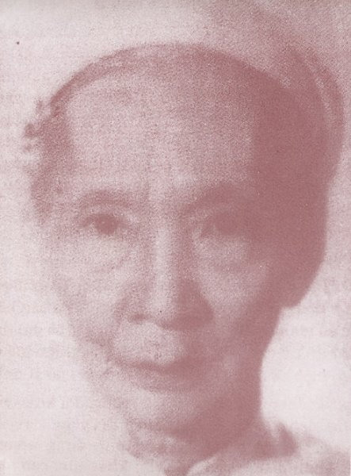

Khi vua Duy tân đến tuổi lấy vợ, chiếu theo lệ do vua Minh Mạng đặt ra ( 1 ), nhà vua không sách lập Hoàng hậu mà chỉ nạp phi, nghĩa là tuyển Cung Phi vào Nội. Người được vua tuyển chọn làm " Đệ nhất Giai Phi ", tức Hoàng Quý Phi, là cô Mai thị Vàng, trưởng nữ của ông Mai Khắc Đôn, Phụ Đạo của nhà vua, ở thôn Kim Long, xã Hương Long, huyện Hương Trà, tỉnh Thừa Thiên. Theo lời của bà Duy Tân kể lại thì cuộc tình duyên của bà đầu đuôi như sau:
Năm 1915, vua Duy Tân được 16 tuổi ( sinh năm 1900), bà 17 tuổi ( sinh năm 1899). Một hôm nhà vua hỏi ông Mai Khắc Đôn:
- Con gái của thầy có cô nào lớn không?
- Muôn tâu, các con gái của hạ thần đều cón nhỏ dại.
Thế rồi, một ngày nọ, nhà vua ngồi xe song mã với ông Đôn đi ngang qua bộ Lễ ( nơi ông này ở ), thấy cô Mai Thị Vàng cùng các em đang chơi ở cổng, bèn hỏi:
- Có phải cô gái lớn kia là con của thầy không?
- Dạ phải
- Con gái của thầy lớn vậy, sao thầy lại dấu tôi?
( Lúc bấy giờ cô Vàng đến bộ Lễ thăm cha, chứ thường ngày cô ở tại thôn Kim Long với mẹ). Sau đó ít lâu, nhà vua cho hai người nhà đến thôn Kim Long để xem mặt cô Vàng và xin ảnh của cô đem về cho Lưỡng Tôn Cung xem......
Một tháng sau, lễ hỏi của cô Vàng được cử hành tại nhà ông Phụ Đạo họ Mai ở Kim Long, rồi qua ngày 30 - 1 - 1916, lễ nạp Phi được tổ chức trọng thể ở bộ Lễ. Trước đó, vua Duy Tân đã cho ông Mai Khắc Đôn biết lý do cuộc hôn nhân này như sau:
- Vì công ơn của Thầy dạy tôi, nay tôi xin làm con rể của Thầy để trả ơn Thầy.
Bà Duy Tân còn cho biết thêm các chi tiết về lễ nạp phi diễn ra như sau:
Thời gian trước đó, Lưỡong Tôn Cung cho người đi thâu thập các ảnh của các tiểu thư con các quan đại thần đem vào Nội dđể nhà vua và các bà chọn một Hoàng Quý Phi cho hoàng thượng. Vì nhà ông Phụ Đạo họ Mai thanh bạch, nên cô Mai Thị Vàng ăn mặc đơn giản, đứng bên cạnh một chiếc ghế mây để chụp. Còn các tiểu thư khác, khi đứng trước máy ảnh, ăn mặc thật lộng lẫy, đeo nhiều nữ trang quý giá, có cô còn ngồi trên một chiếc ghế có hai con chim phụng chầu hai bên. Mặc dù vậy, cuối cùng cô Vàng lại được tuyển....
Lễ nạp phi được diễn ra như sau:
Giờ Tý ngày 26 tháng chạp năm Bính thìn ( 30 - 01- 1916 ) đám cưới dâu gồm toàn phụ nữ, trong đó có 6 bà Thượng Thư mặc áo Mạng Phụ, chít khăn vành, các bà đại thần khác và một số thị nữ cầm phất trần, bạch hạc, thiên tuế..... đến bộ Lễ, có một xe ngọc lệ tứ mã đi theo với cờ xí linh đình.
Về phần nhà gái, cô dâu mặc áo rộng, đội khăn vành, hai món nữ trang này được đem đến khi nạp lễ, đựng trong một cái hộp phủ khăn điều, ngoài các thứ khác như cau lồng, rượu ché...
Qua giờ Ngọ, sau khi cô dâu lạy bàn thờ tổ tiên và lạy cha mẹ xong, một cây pháo quả được đốt nổ vang, báo hiệu cuộc rước dâu bắt đầu. Cô dâu cùng 6 bà Thượng Thư lên kiệu ngọc lệ tứ mã chậm rãi tiến vào cung, theo sau là đoàn tùy tùng.
Có một điều xảy ra, mà người ta cho là điềm xấu: Khi đám rước dâu đi ra, cây pháo chỉ nổ có một tiếng rồi tắt hẳn.
Trước lễ nạp phi, trong Nội có sai thị vệ đem ra nhà cô dâu 20 nén bạc, mấy nén vàng, cùng 20 cây sô, sa gấm, nhiễu đủ màu, mấy nén vàng dùng để làm đồ nữ trang và vật dùng cho cô dâu như gương, lược, hộp đựng phấn sáp...
Kể từ ngày nạp phi, trong ba ngày ba đêm liền, tại bộ Lễ ban ngày có bày cỗ thết các quan ta, quan tây và bà con bên nhà gái, ban đêm thì có múa bông và ca hát, đàn địch do ban đồng ấu của Đại Nội phụ trách để cho quan khách thưởng thức.
Sau khi được rước vào Hoàng Cung, bà phi ( tức bà Mai Thị Vàng ) chỉ có đến bái yết hai bà đích mẫu và sanh mẫu của vua chứ không có nghi lễ gì khác.
Vua và bà phi ở tại điện Kiến Trung, vua ở căn tả, bà phi ở căn hữu, còn căn giữa dùng để thờ đức Thánh Trần.
---------
( 1) Minh Mạng đã đặt ra " ngũ bất lập" là: Bấp lập Hoàng Hậu, Đông Cung,Tể tướng, bất phong vương và bất tuyển trạng nguyên.
( Theo Hoàng Trọng Thược )

Bà Mai Thị Vàng